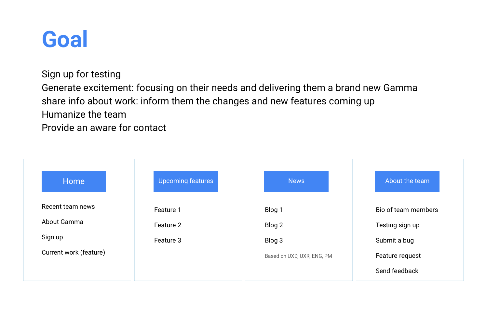
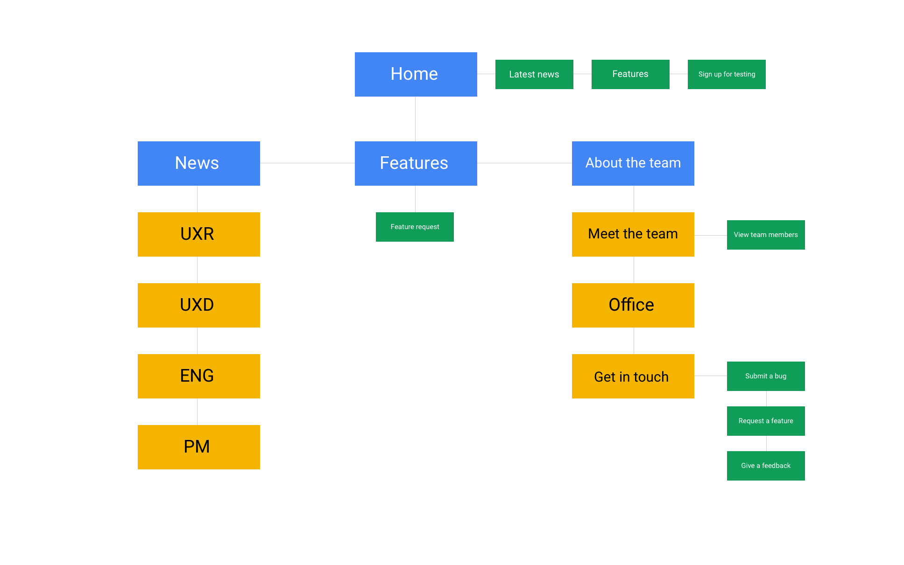
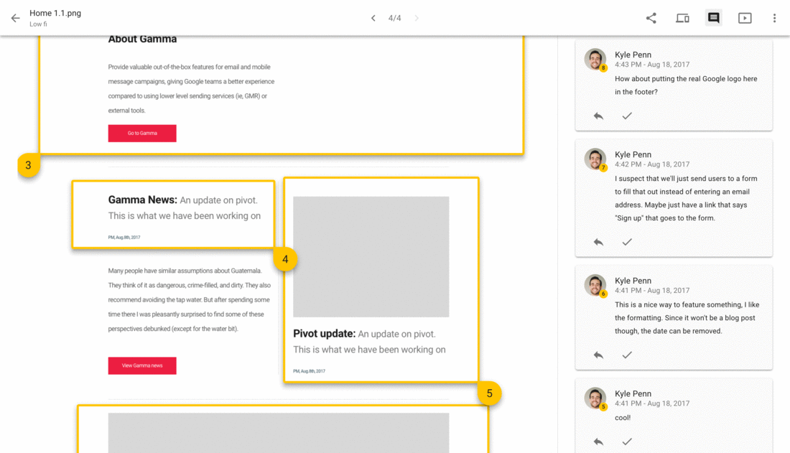
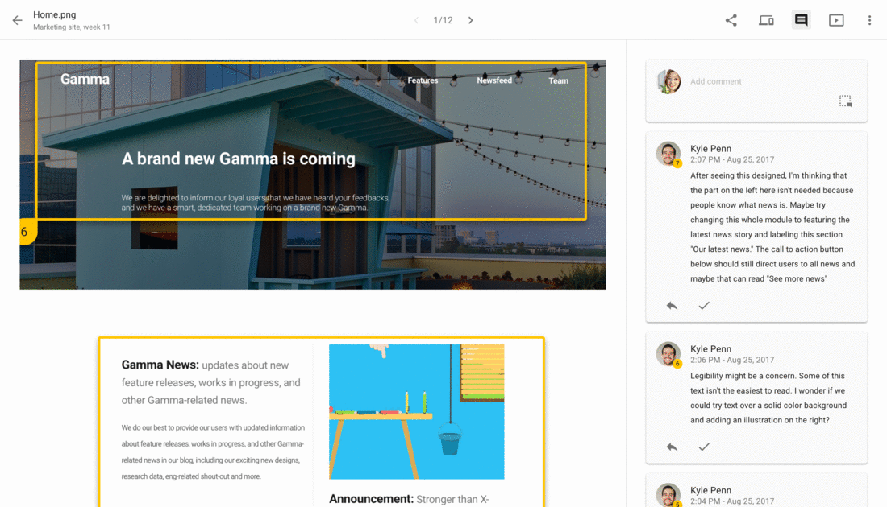

Overview & introduction
Currently, Gamma is going through a major redesign. We want to keep the tool powerful and also easy to use. As an intern who is only on the team for three month, my timeline doesn’t fit into the scope of being part of the product redesign. However, with all the redesign and changing that are happening to Gamma, users need to be informed about what is going on to the everyday tool they are using, what are coming next, and having provide users a way to get in contact with us.
That is why my project exist. My major internship project of this summer is to design a marketing website for existing Gamma users, to inform them about the progress of redesign and provide contact information.
Target users & Process
My target users are Gamma's existing users. Gamma is an internal tool for Googlers.The goal is to market the Gamma redesign, Gamma redesign, and to inform the changes coming up that is going to ease their lives, instead of attracting new users.
- Onboarding and research
- Understanding and setting design goal
- Brainstorm on the content
- Sitemap
- Low fidelity mockups and iteration
- High fidelity mockups and iteration + illustration
Where is the North Star?
What are the design goals (the north star) that need to be achieved by this marketing website? Here is a diagram that includes design goals and contents during brainstorm session.
Based on the information from research and talking to senior team members, I brainstormed on how to organize the work progress we have done and achieve these design goals on the website.
I grouped them into upcoming features, news, which are information externalized by team leads, and About the team page, which is to humanize the team and provide a way of contact.
Sitemap
So now we know what the pages are and what goes on the page, the next step I took was to generate the diagram above into a more organized sitemap.
Low fidelity mockups and iteration
Here are some low fidelity mockups with my team member's feedback.

What I learned from this iteration process:
- Understand other’s feedback. Next time, iteration, point that feedback out, tell them what you did based on their feedback - you keep the design better, conversation and presentation fun, as well as engaging with your audience. People appreciate their words are listened and taken.
- Be patient. Don’t jump into high fi too early. Keep the placement text and image out. When in cases you have them, indicated them. Otherwise they are going to give feedback on them. Don’t waste people’s time!
After both myself and the team agreed on the lo-fi design, I worked on the style guide and moved to hi-fi design. Also, thanks to my teammate Kyle to give me feedback whenever I asked. His feedbacks helped me a lot during this iteration process.
High fidelity mockups iteration and illustrations

What I learned from this iteration process:
- What is a good ask-for-feedback design package: Keep the placement text and image out. When in cases you need to have them, indicated them. Otherwise they are going to give feedback on them. Don’t waste people’s time! Also, have supporting comments on the mockups to avoid confusion.
- Treat every meeting very very seriously, especially as a junior designer. Be prepared! Do your research! Think about what other people might ask and always have answers ready! No matter it’s UX team sync, feedback providing meeting, or meet with PM and Eng.
- Make your work trackable and maintainable
I created stylesheets and illustration during this process, and I had a lot of fun with it. After both myself and the team agreed on the design and illustration, I worked on the final presentation.